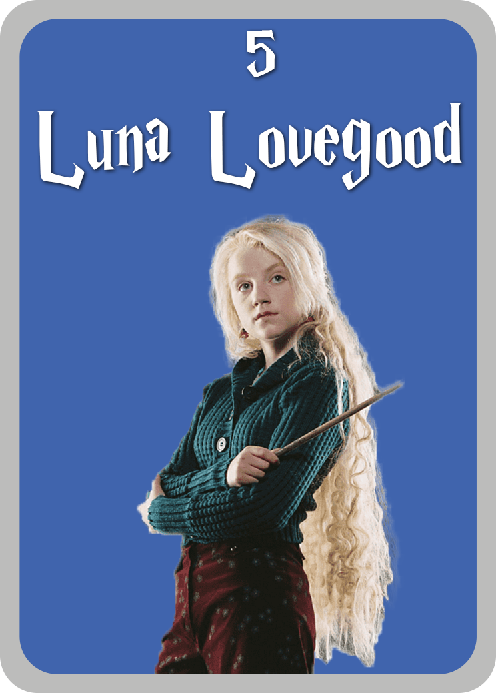

Harry James Potter naît le 31 juillet 1980, dans le village de Godric's Hollow. Il manque de mourir à l'âge de quinze mois, lorsque Lord Voldemort, ayant eu connaissance d'une partie de la prophétie de Trelawney, lui jette le sortilège impardonnable de l'Avada Kedavra auquel personne n'a jamais survécu jusque-là.
Harry Potter

Draco Malfoy
Drago Malefoy, né le 5 juin 1980, est le fils unique de Lucius Malefoy et de Narcissa Malefoyet, unique héritier de la famille Malefoy. Il est donc le petit cousin de Lucius Black.
Luna Lovegood
Luna avait neuf ans lorsque sa mère décéda accidentellement en faisant des expériences avec des sortilèges ; elle fut donc élevée principalement par son père, rédacteur en chef du magazine le Chicaneur, dans une maison des plus originales. Luna suivit sa scolarité à l'école de sorcellerie de Poudlard, de 1992 à 1999.


Cedric Diggory
Cédric Diggory est un personnage de Harry Potter. C'est le fils d'Amos Diggory. Il est un élève de Poufsouffle, capitaine et attrapeur de l'équipe de Quidditch de Poufsouffle. Lors de sa septième année, il est sélectionné par la Coupe de Feu pour représenter Poudlard au Tournoi des Trois Sorciers.